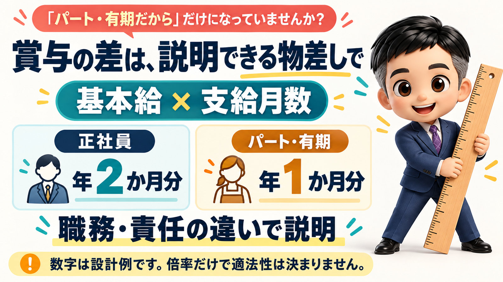

労基署の同一労働同一賃金アンケートは、賞与と通勤手当の差と、その理由を聞いてきます。理由に「パート・有期だから」としか書けないなら、今のうちに整えてください。
今日は、同一労働同一賃金のアンケートの話をします。
労基署の調査の前に、会社へ届くことがあるアンケートです。
その実物の設問を、一つずつ見ていきます。
先に結論を言っておきます。
賃金について聞かれるのは、基本給・賞与・通勤手当の3つです。
中でも、まず整えてほしいのは賞与と通勤手当です。
選択肢を見ると、正社員との差があるかどうかが、そのまま分かってしまうからです。
調査の前に、チェックリストが届くことがあります。
労基署の調査が入るとき、事前に会社へアンケートが送られてくることがあります。
必ず届くのかどうかは、私には分かりません。
ただ、数年前から届いているという話は、今もよく耳にします。
行政の側でも、2022年12月から、労働基準監督署と都道府県労働局が連携して、同一労働同一賃金の徹底に取り組んでいます。
2023年の労働局の発表資料に、こういう趣旨の記載があります。
非正規雇用労働者の賃金引上げに向けた同一労働同一賃金の取組強化期間(愛知労働局)
アンケートの名前は、「同一労働同一賃金チェックリスト(パートタイム・有期雇用労働法関係)」です。
冒頭には、こういう趣旨の注意書きがあります。
回答した内容は、都道府県労働局の雇用環境・均等部(室)と、働き方改革推進支援センターにも共有する。
必要に応じて、改めて連絡することがある。
「書いて出したら、それで終わりじゃないんだ」
書いた答えが、そのあとのやりとりの材料になりうる、ということです。
設問は8つで、賃金は基本給・賞与・通勤手当です。
設問は、全部で8つです。
比べる相手は、パート・有期の人と、仕事の内容や職責がいちばん近い正社員です。
1問目は、基本給の支給基準が、正社員と同じかどうか。
2問目は、基本給の水準が正社員の何割くらいか、違うならその理由は何か。
3問目は、賞与の扱い。
4問目は、賞与の扱いが違う理由。
5問目は、通勤手当の扱い。
6問目は、待遇を就業規則や賃金規程で定めているかどうか。
7問目は、パート・有期の人から待遇の違いを聞かれて、説明したことがあるかどうか。
8問目は、社労士などの専門家による無料のコンサルティングを希望するかどうか。
手当には、家族手当や住宅手当などいろいろあります。
それでも、名指しで聞かれる手当は、通勤手当だけです。
賞与は、選択肢に答えがそのまま出てしまいます。
3問目の賞与の選択肢は、こうです。
正社員と同じ基準(計算式・金額)で支給している。
正社員には支給するが、パート・有期には支給していない。
どちらも支給しているが、支給基準が異なる。
どちらも支給していない。
わからない。
賞与を正社員にしか払っていない会社は、まだまだ多いと思います。
その会社は、2番目に印をつけることになります。
そして、2番目か3番目を選んだ会社には、4問目が続きます。
違う扱いをしている理由は何か、です。
最も当てはまる理由を、一つだけ選びます。
正社員と仕事内容や職責が異なるから。
異動・転勤・昇進の有無、その範囲が異なるから。
パート・有期だから。
わからない。
その他。
「うちは、パートだから出していないだけなんだけど」
正直に選ぶと、3番目の「パート・有期だから」になる会社もあると思います。
でも、雇用の形が違うというだけでは待遇差の理由にならない、というのが同一労働同一賃金の考え方です。
この欄に「パート・有期だから」としか書けないなら、今のうちに整えてください。
賞与は、均等ではなく均衡です。
では、非正規の人に賞与をいくら払えばいいのか。
正社員と同じ金額を払う、という均等の話ではありません。
均衡です。
平衡の衡と書く、均衡です。
2026年10月1日から適用されている改正ガイドラインでは、賞与について、こういう趣旨の記載が加わりました。
賞与には、労務の対価の後払い、功労報償、労働意欲の向上など、いろいろな性質と目的がある。
その性質や目的が、非正規の人にも当てはまる。
それなのに、違いに応じた均衡のとれた賞与を払っていなければ、不合理とされうる。
物差しは、正社員と同じ計算式から作れます。
均衡と言っても、どう釣り合いを取るのかは見えにくいと思います。
正社員は1人100万円で、非正規は1万円の寸志。
こういうことも、なきにしもあらずです。
「客観的に考えると、100倍はないですよね」
せめて2倍、3倍、4倍くらいではないか、というところで設計していく。
そのための物差しの作り方を、一つ例に挙げます。
正社員の賞与を、基本給に支給月数を掛けて決めている会社なら、同じ計算式を非正規の人にも当てはめます。
そのうえで、職務や責任の違いを、支給月数の差で表します。
例えば、正社員は年2か月分、非正規は年1か月分。
これなら、差は計算式の上で2倍だと説明できます。
数字は、あくまで例です。
何倍までなら大丈夫、という線は、どこにも書かれていません。
大事なのは、その差を職務や責任の違いで説明できることです。
4問目で、「仕事内容や職責が異なるから」に迷わず印をつけられる状態にしておく。
物差しを持って支給することが、このアンケートへの一番の備えになります。

通勤手当は、上限額の差も「差がある」に入ります。
5問目の通勤手当の選択肢は、こうです。
正社員と差がある(計算式・上限額の差も含む)。
正社員と差がない。
わからない。
手当がない。
上限額の差も含む、とわざわざ書かれています。
正社員は実費が出るのに、アルバイトには低い上限がある。
こういう会社は、まだまだ多いと思います。
その会社は、1番目の「差がある」に印をつけることになります。
同一労働同一賃金の考え方は、もともとこうです。
職務、責任、異動の有無といったところに差があれば、手当や給与に差をつけていい。
それ以外のところでは、差をつけないほうがいい。
「責任が重いから、交通費を高く払います」
これは、どう考えても変な話です。
ガイドラインにも、非正規の人にも正社員と同一の通勤手当を払わなければならない、と書かれています。
差をつけても問題にならない例として挙がっているのは、店舗採用の人に、近隣から通える額の上限を設けている場合などです。
所定労働日数が少ない人に、定期代ではなく日額の交通費を払う、という例もあります。
ただ、こうした例にきちんと当てはまる会社は、限られると思います。
通勤手当は、正社員と同じ基準にそろえてください。
規定と説明の準備も、聞かれます。
6問目と7問目も、見落とさないでください。
6問目は、パート・有期の人の待遇を、就業規則や賃金規程で定めているかどうかです。
規定はなく、一人ひとりの労働契約だけで決めている、という選択肢もあります。
7問目は、待遇の違いを聞かれたときに説明できるかどうかです。
聞かれたこともないし、説明の準備もしていない、という選択肢もあります。
賞与と通勤手当を整えたら、その中身を規程に書き、説明できるようにしておく。
ここまでやって、このアンケートにきちんと答えられる状態になります。
まとめ
労基署の調査の前に、同一労働同一賃金のチェックリストが届くことがあります。
回答は、労働局や働き方改革推進支援センターにも共有されます。
設問は8つで、賃金について聞かれるのは基本給・賞与・通勤手当の3つです。
賞与を正社員にしか払っていなければ、選択肢でそのまま分かります。
違う理由の欄に「パート・有期だから」としか書けないなら、整える番です。
賞与は均等ではなく、均衡です。
正社員と同じ計算式を当てはめ、差を職務や責任で説明できる物差しを作ってください。
通勤手当は、上限額の差も「差がある」に数えられます。
通勤手当は、正社員と同じ基準にそろえてください。
整えた中身は規程に書き、説明できるようにしておいてください。
働き方をアセントさせる一歩は、このアンケートに今の自社ならどう答えるか、試してみることだと思います。
アンケートの全容は、公式LINEにご登録いただいた方にお配りしています。
8つの設問と選択肢を、そのままご覧いただけます。
ご自身の会社で、一度答えてみてください。